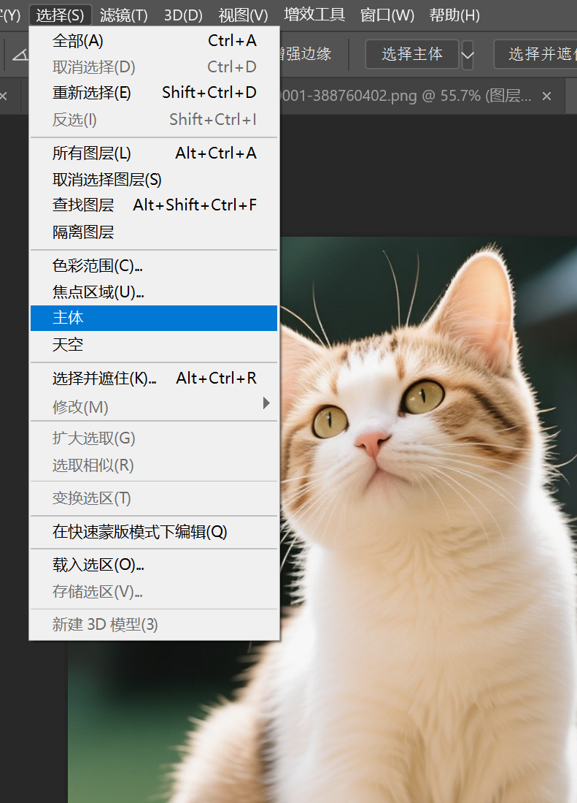
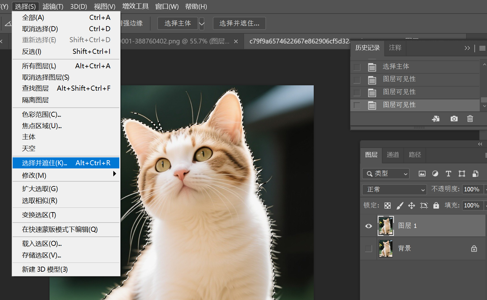
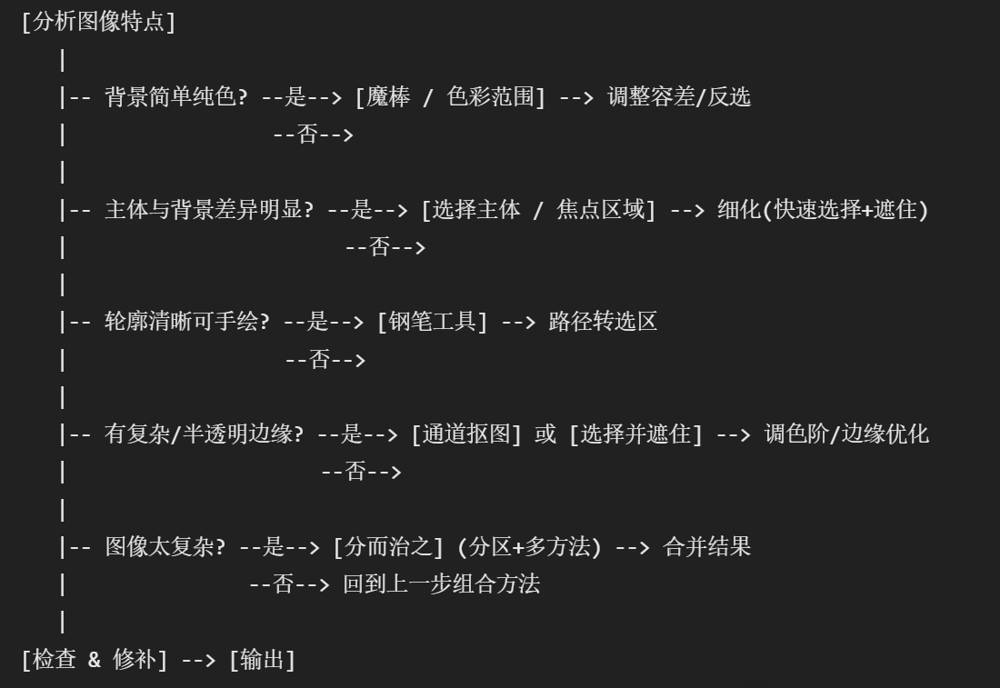

主体+选择并遮住
主体+选择并遮住 适用于那些边缘复杂或半透明的物体，如毛发，烟雾，透明纱衣等
先复制一份原始图层，防止不可逆破坏。关闭原来图层的可见，仅拷贝可见
点击上方“选择”->“主体”，算法快速识别图片中的主体，并创建选区

“选择”->“主体”
此时可以看见猫猫主体已经被抠出。但是对于细长的毛发，却无法识别
点击上方“选择”->“选择并遮住”，此时会进入一个特殊界面

“选择”->“选择并遮住”
点击放大视频
点击缩小视频
选择并遮住，涂抹边缘，净化颜色
在左侧选择“调整边缘画笔工具”，然后在边缘处涂抹，涂出原来主体边缘没能选出的毛发等复杂边缘。
接着在右侧面板最底下选择“净化颜色”，根据需要调整数量，这可以减少原来背景环境对边缘颜色的影响，使得抠出来的图像换到其他背景不会显得生硬
通道辅助创建选区
用通道分离背景和主体，适用于主体和背景颜色差异大，对比度强的图片。
点击放大视频
点击缩小视频
通道辅助创建选区
方法论/决策树
下面总结一些抠图的方法论，并且给出一个抠图的改用什么工具决策树，仅供参考
--提高对比：抠图的关键是精确创建选区，选出主体（背景）。利用PS自带的算法快速创建这样的选区，则需要突出主体和背景的对比度。前面所说的通道抠图就是从某个颜色出发提高这个对比创建出了选区，此外还可以用调整图层和滤镜等方法
--分而治之：对于一个图像，对全局应用一种手段可能会造成顾此失彼的情况，无法一次性对整个图像应用一种方法就解决。这时采取分而治之的手法，先用钢笔或套索人工分割，再分别针对处理
--人工修补：对于复杂的图像，算法没法做到尽善尽美，人工的修补有时不可避免

决策树，仅供参考